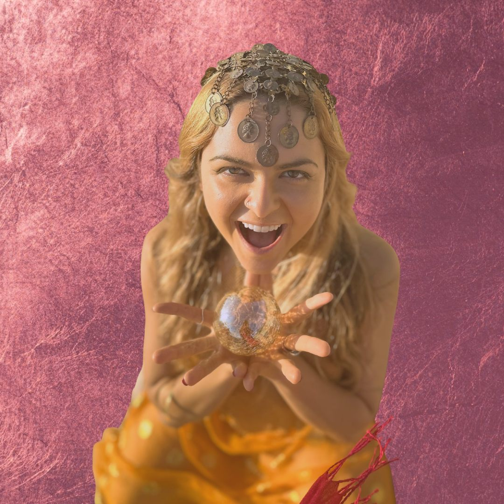

Despertar do Prazer Sagrado
Sete meditações para começar pelo corpo e perceber o prazer como presença criativa.
Escola iniciática de saberes femininos
The Art of Living Devotion
O sagrado volta a habitar o corpo.
Um espaço onde psicologia profunda, arte e espiritualidade encarnada devolvem você à própria morada.
Comece pela experiência que chama o teu corpo.
01 · A lembrança
Você sente antes de saber explicar
Há dias em que a tua voz fica presa na garganta. O corpo pede presença, mas a rotina continua exigindo respostas de uma mulher que já mudou por dentro.
Então você percebe: não falta profundidade. Falta um lugar onde tudo o que sente possa ganhar corpo, direção e forma.
“Você nunca esteve quebrada.
Apenas esquecida de si.
02 · O exílio
A criação adia. A voz pede licença. O prazer acontece para fora. E aquilo que poderia nascer de você passa mais um ciclo esperando espaço.
O Templo começa no instante em que você volta.
03 · O caminho
Método S.E.R.
S.E.R. é a Ressonância Corporificada do Sagrado. Uma espiral de presença que desce ao corpo, ilumina o que estava sem nome, devolve movimento à energia e permite que a verdade encontre expressão na vida.
Descer da mente e reconhecer o corpo como solo seguro.
Estou aqui? Habito o meu próprio templo?Dar nome ao padrão e contexto à própria história.
O que em mim aprendeu a se calar?Liberar a energia presa e devolver movimento ao que ficou imóvel.
O que estou pronta para soltar e regenerar?Permitir que a verdade encontre som, gesto e forma.
Como a minha verdade quer se expressar?Levar a experiência para a rotina, as relações e a maneira de conduzir a vida.
Como eu vivo isso todos os dias?O caminho já tem forma. Agora encontre a porta que encontra o teu momento.
Entrar no Templo04 · A expressão
A arte vive no centro
A voz, o canto, a dança e a imagem dão forma ao que o corpo já sabe. Aqui, arte não entra como ornamento. Ela organiza o invisível e devolve presença ao que pede passagem.
05 · As portas
Experiências do Templo
Sete meditações para começar pelo corpo e perceber o prazer como presença criativa.
Uma passagem da espera por ser escolhida para o gesto de se escolher.
A jornada contínua da Iniciação Dourada, com encontros a cada 14 dias e um caminho que acompanha os ritmos do corpo.

Fundadora · artista · doula de passagem
06 · Quem conduz
Prana Ka
Prana é fundadora do The Golden Temple, sacerdotisa do ventre e da voz, artista, compositora e doula de passagem.
Sua condução nasce do encontro entre corpo, psicologia profunda, expressão artística e espiritualidade encarnada. Ela chama de Templo o lugar em que uma mulher deixa de se abandonar para voltar a criar a partir de si.
“Eu guio não porque sei tudo. Eu guio porque vivo o caminho.”
07 · A dedicação
O filtro do Templo
Mulheres sensíveis, criativas, inteiras demais para continuar cabendo em lugares que pedem silêncio.
Talvez ainda não seja a hora se você procura uma experiência rápida, uma resposta pronta ou alguém que caminhe por você.
Aqui, dedicação não é cobrança. É presença.
O portal permanece aberto
Habitá-la é o próximo gesto.
Entrar no Templo Escolha pela presença, não pela pressa.